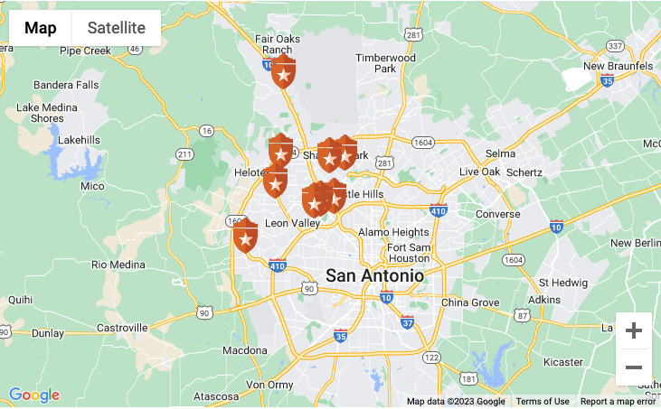

UT Health San Antonio provides advanced, comprehensive orthopaedic care in one of the largest orthopaedics groups in South Texas. Our fellowship-trained experts treat the full range of conditions, from routine injuries to orthopaedic emergencies, and continue to transform care through academic research, clinical innovation and new treatment approaches.
We are San Antonio’s academic health center for specialized orthopaedic care. Our nationally recognized experts treat everything from joint and spine conditions to orthopaedic emergencies, with access to leading-edge procedures, clinical trials and coordinated rehabilitation.
We also care for athletes at every level across South Texas, including as team doctors for the San Antonio Spurs, UTSA Athletics and San Antonio Missions.
Our community relies on us for many reasons, including our:
Halvah soufflé apple pie icing jelly-o. Muffin gummi bears apple pie marzipan apple pie cake cupcake. Gummi bears danish lemon drops cupcake chocolate cake fruitcake liquorice sweet. Cake sweet cake brownie cake. Cake lemon drops tart sweet apple pie. Dragée jelly beans gummies icing topping pie tootsie roll soufflé lollipop. Gummies apple pie tart oat cake gummi bears gingerbread.


UT Health San Antonio has partnered with the San Antonio Spurs in a joint effort to pursue innovations in human performance and improve the health of the greater San Antonio community.

We are making lives better by offering advanced sports medicine and orthopaedic care for our athletes and our community at locations across San Antonio and the Hill Country.

UT Health San Antonio is proud to be the official sports medicine partner of the San Antonio Missions Baseball Club. Our expert providers deliver comprehensive care—helping players stay healthy and perform at their best.


UT Health San Antonio has begun offering total thumb arthroplasty, a next-generation procedure designed to restore motion, strength and function at the base of the thumb.

Leah Brown, MD, head team orthopaedic surgeon for the San Antonio Spurs and clinical associate professor at UT Health San Antonio, was recently inducted into the State of Georgia Sports Hall of Fame.

Convenient sports medicine care at UT Health at Kyle Seale Parkway
Our specialized team is now available on Saturdays from 8 a.m. to 12 p.m. for injury evaluations, concussion management, X-rays, casting and more.
Call 210-56-SPORT to make an appointment or just walk in.